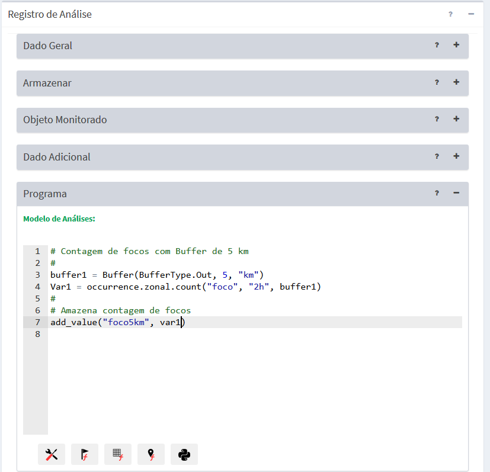
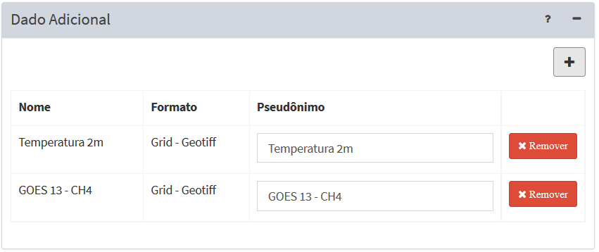

Objeto Monitorado
Em geral, análises baseadas em objeto monitorado são realizadas pela sobreposição de dados estáticos vetoriais com um dos três tipos de dados dinâmicos, isto é, grades retangulares, PCD ou ocorrências, que foram coletados, gerados ou apenas disponíveis na base de dados. Resultados de outras análises também podem ser reutilizados como dados dinâmicos.
A sobreposição dos objetos monitorados com os dados dinâmicos é realizada com uso dos operadores geográficos criados exclusivamente para uso na plataforma, juntamente com os recursos que a linguagem de programação Python proporciona. Os resultados desses operadores são armazenados em uma nova tabela de atributos que estará associada a tabela do objeto monitorado. Nessa nova tabela são armazenados ainda a data/hora de execução da análise.
EDITANDO ANÁLISE COM OBJETO MONITORADO
A Figura 3.8 mostra a área de trabalho de Análises utilizada para se definir uma análise baseada em objetos monitorados. Descrevemos a seguir cada um dos campos dessa interface.

Figura 3.8 – Módulo de Administração: Análise com base em objeto monitorado.
Registro de Análise – Dado Geral:
- Nome: Defina o nome da análise (campo obrigatório). O tamanho máximo do nome é de 100 caracteres. Não é permitido nomes duplicados.
- Tipo: Escolha o tipo “Objeto Monitorado”. As demais opções estão descritas nos itens associados - “Grade” , “PCD” e “Processamento Vetorial”. IMPORTANTE: Após salvar a análise o tipo não poderá ser alterado.
- Descrição: Campo não obrigatório para descrição da análise. O tamanho máximo do texto é de 250 caracteres.
- Serviço: Escolha o serviço de análise que estará associado a análise corrente. Se necessário adicionar novos serviços de análise (local ou remoto) consulte Adicionar Serviço.
- Ativo: Botão ativo executará a análise de acordo com agendamento definido abaixo. Se o botão estiver desmarcado a análise não será executada. Uma análise que não esteja ativa poderá ser executada apenas manualmente pelo botão “
 Executar” disponível na lista de análises da área de trabalho.
Executar” disponível na lista de análises da área de trabalho.
Registro de Análise – Armazenar
Utilize os parâmetros desta seção para definir o local de armazenamento dos dados e o agendamento da execução. No caso de uma análise baseada em objeto monitorado, será solicitado o nome de uma tabela a ser criada no banco de dados.
- Formato de saída: Para este tipo de análise apenas a opção “Análise de objeto monitorado” encontra-se disponível. Atenção: após salvar a análise o formato de saída não poderá ser alterado.
- Nome da tabela: Digite o nome da tabela a ser criada para armazenar os resultados. Esta tabela terá um relacionamento de “n” para “1” com a tabela do dado estático (ou objeto monitorado). Em outras palavras, toda vez que a análise for executada serão armazenados data/hora e resultados dos cálculos para cada objeto monitorado.
Atenção: Para nome de tabela de banco de dados NÃO utilize espaços em branco ou caracteres especiais. USE somente caracteres minúsculas e um traço “_” para separar sílabas como “an_grid_mun_max”.
NOTA: A tabela resultante da análise armazena de forma contínua criando novos registro a cada execução. Se necessário o administrador do banco de dados poderá remover esta tabela que a mesma será recriada na próxima execução da análise. Recomenda-se desativar a execução da análise antes de remover esta tabela. Se for definido um nome diferente para a tabela, será necessário recriar nova visualização e alerta que utilizam a análise modificada.
Registro de Análise – Armazenar - Agendamento
Nesta seção o usuário deve definir quando será executada a análise.
- Tipo: Escolha tipo “Manual”, “Agendamento”, “Reprocessamento de dados históricos”, ou “Automático”. Se “Manual” a execução da análise só será realizada se o usuário utilizar o botão “
 Executar” no item da lista de análises que desejar, ou ainda em “Salvar e executar” da análise aberta. Se “Agendamento” a execução da análise será por intervalos pré-definidos podendo também definir o tempo inicial. Se “Reprocessamento de dados históricos” a execução da análise será por intervalos pré-definidos podendo também definir o tempo inicial, porém em um período inicial e final no passado. Se “Automático” dependerá da chegada de qualquer dos dados dinâmicos que uma análise utilizar.
Executar” no item da lista de análises que desejar, ou ainda em “Salvar e executar” da análise aberta. Se “Agendamento” a execução da análise será por intervalos pré-definidos podendo também definir o tempo inicial. Se “Reprocessamento de dados históricos” a execução da análise será por intervalos pré-definidos podendo também definir o tempo inicial, porém em um período inicial e final no passado. Se “Automático” dependerá da chegada de qualquer dos dados dinâmicos que uma análise utilizar.
NOTA: Em todas opções do agendamento a tabela da análise armazena de forma contínua os resultados, exceto em “Reprocessamento de dados históricos” que a cada execução da análise os registros serão apagados para que os valores sejam atualizados.
- Data Inicial
 (somente se Tipo for “Reprocessamento de dados históricos”): Clique no campo para escolher a data e hora que será utilizada para início do reprocessamento.
(somente se Tipo for “Reprocessamento de dados históricos”): Clique no campo para escolher a data e hora que será utilizada para início do reprocessamento. - Data Final
 (somente se Tipo for “Reprocessamento de dados históricos”): Clique no campo para escolher a data e hora que será utilizada para fim do reprocessamento.
(somente se Tipo for “Reprocessamento de dados históricos”): Clique no campo para escolher a data e hora que será utilizada para fim do reprocessamento. - Unidade de tempo: Escolha um item entre “Segundos, Minutos, Horas e Semanalmente”.
- Frequência (somente se Unidade de tempo for Segundos, Minutos, Horas): Digite um valor de um número inteiro.
- Tempo Inicial
 (somente se Unidade de tempo for Segundos, Minutos, Horas): Clique no campo para escolher o valor de hora, minuto e segundo que será utilizado como referência para executar a análise. Campo não obrigatório e caso não definido será a partir do momento em que a análise for salva.
(somente se Unidade de tempo for Segundos, Minutos, Horas): Clique no campo para escolher o valor de hora, minuto e segundo que será utilizado como referência para executar a análise. Campo não obrigatório e caso não definido será a partir do momento em que a análise for salva. - Agendamento (somente se Unidade de tempo for Semanalmente): escolha uma das opções entre “Domingo, Segunda-feira, Terça-feira, Quarta-feira, Quinta-Feira, Sexta-feira e Sábado”
- Hora (somente se Unidade de tempo for Semanalmente): clique no campo para escolher o valor de hora, minuto e segundo que será executada para iniciar a análise.
Registro de Análise – Objeto Monitorado
Nesta seção o usuário deve escolher qual será o objeto monitorado, que corresponde a um dado estático vetorial no formato de uma tabela de feição no PostGIS, com representação geométrica de pontos, linhas ou polígonos, previamente cadastrado (ver Adicionar Dado Estático).
- Série de Dados: Escolha um dado estático vetorial previamente cadastrado como dado estático. Atenção: após salvar a análise a série de dados não poderá ser alterada.
- Atributo Identificador: Clique no campo e escolha um atributo que será utilizado para identificar os objetos nos relatórios.
Registro de Análise – Dado Adicional
Nesta seção o usuário deve escolher qual ou quais dados estáticos (matriciais somente) ou dinâmicos (PCD, Ocorrência, Matriz ou ainda resultados de outras análises) que serão cruzados (ou sobrepostos espacialmente) com as geometrias do objeto monitorado.
- + : Clique no botão para selecionar um dado estático ou dinâmico na janela que será apresentada.
- ⮧ Estático: Clique para abrir a lista de dados estáticos a escolher. Note que uma vez escolhido o mesmo será retirado dessa lista. A lista de dados escolhidos fica disponível na área de trabalho.
- ⮧ Dinâmico: Clique para abrir a lista de dados dinâmicos a escolher. Note que uma vez escolhido o mesmo será retirado dessa lista. A lista de dados escolhidos fica disponível na área de trabalho.
Após a inclusão de um dado na lista, o campo de pseudônimo pode ser alterado. Use o botão “X Remover” a frente do item para excluir um dado da lista (Figura 3.9).
- Pseudônimo: Ao escolher um dado a lista automaticamente mostra o mesmo conteúdo do nome para seu pseudônimo. Clique no campo correspondente que deseja alterar. Nas regras de análise serão os pseudônimos que deverão ser utilizados pelos operadores (ver Operadores). Lembre-se que a plataforma faz distinção entre maiúsculas e minúsculas.

Figura 3.9 – Módulo de Administração: Análise – Lista de Dados Adicionais
Registro de Análise – Programa
Nesta seção o usuário deve editar o programa de análise. A edição do programa utiliza a linguagem Python, portanto, siga rigorosamente a sintaxe dos comandos definidos para esta linguagem. Além dos comandos e funções de Python você pode utilizar os utilitários e os operadores zonais criados especialmente para a plataforma TerraMA2.
Para facilitar a edição do programa, botões na parte inferior da janela possibilitam escolher atalhos de alguns itens específicos. Ao escolher um item entre os botões disponíveis, o conteúdo será incluído na posição em que estiver o cursor. Os atalhos disponíveis são:
- Atalho para os utilitários da plataforma, tais como “Buffer” a ser aplicado em geometrias do objeto monitorado, unidades de distância, tempo, “Add value”, “Get value” e “Get date”.
- Atalho para os atributos do objeto monitorado (ou dado estático vetorial) que foi escolhido para a análise atual. Junto do nome do atributo o utilitário “get_value” será inserido, pois este deve ser utilizado para ser atribuído a uma variável do programa.
 - Atalho para os operadores que trabalham com dados dinâmicos de PCD. Contém uma lista de operadores que retornam regras de influência das PCD, agrupados em operadores zonais, zonais históricos e zonais históricos por intervalo.
- Atalho para os operadores que trabalham com dados dinâmicos de PCD. Contém uma lista de operadores que retornam regras de influência das PCD, agrupados em operadores zonais, zonais históricos e zonais históricos por intervalo.
 - Atalho para os operadores que trabalham com dados dinâmicos matriciais. Contém uma lista de operadores que utilizam dados de observação e previsão, agrupados em zonais, zonais históricos e zonais de previsão.
- Atalho para os operadores que trabalham com dados dinâmicos matriciais. Contém uma lista de operadores que utilizam dados de observação e previsão, agrupados em zonais, zonais históricos e zonais de previsão.
 - Atalho para os operadores que trabalham com dados dinâmicos de ocorrências. Contém uma lista de operadores históricos agrupados em zonais, zonais por agregação e zonais por intervalo.
- Atalho para os operadores que trabalham com dados dinâmicos de ocorrências. Contém uma lista de operadores históricos agrupados em zonais, zonais por agregação e zonais por intervalo.
- Atalho para algumas funções, operadores e comandos de Python. Outros recursos veja o anexo "Um pouco de Python".
Após editar o programa, poderá utilizar o botão “Validar” para identificar se há erros de sintaxe nos comandos, funções e operadores utilizados. O botão “Salvar e executar” grava as últimas alterações e executa a análise mesmo que esta esteja inativa. Se desejar apenas gravar as alterações clique na seta do botão e escolha “Salvar”. Para as análises que estiverem ativas, as próximas execuções seguirão as regras definidas na seção “Agendamento”.
Importante: O programa de análise definido pelo usuário é executado individualmente para cada geometria do objeto monitorado. É obrigatório que o programa faça uso pelo menos uma vez do utilitário “add_value” para que seja definido um atributo da tabela de análise. Este utilitário pode ser utilizado dentro de um comando condicional ( if ) para adicionar valores resultantes da análise somente nos objetos de interesse do usuário (veja exemplo aqui).
Exemplo - Análise Objetos monitorados (  )
)